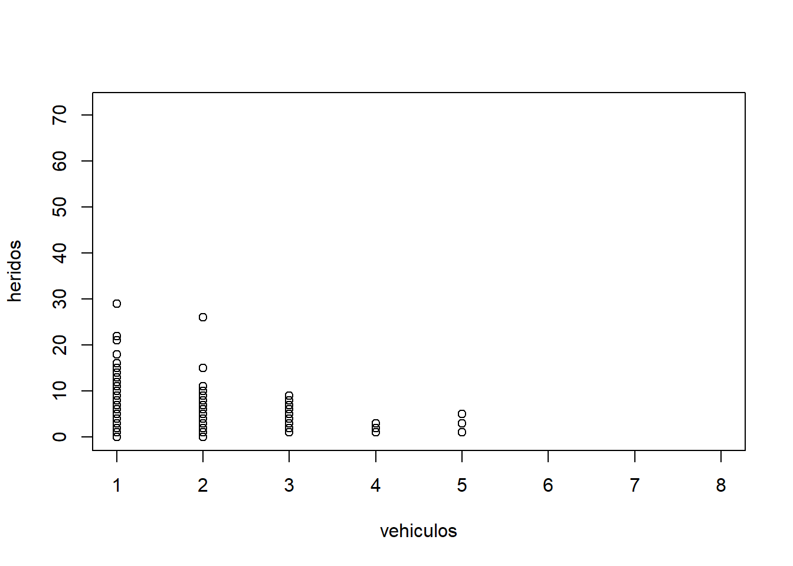
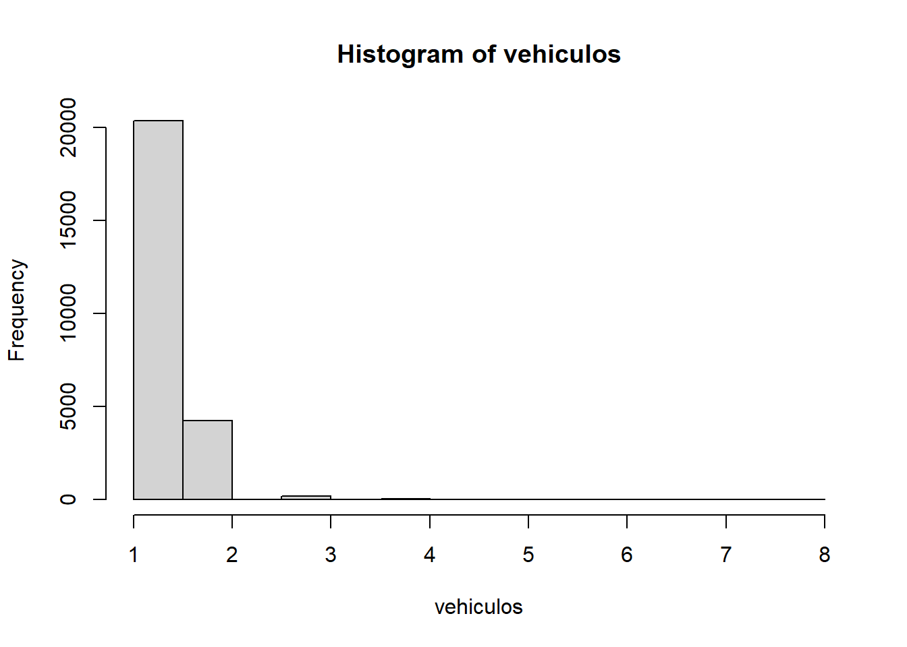
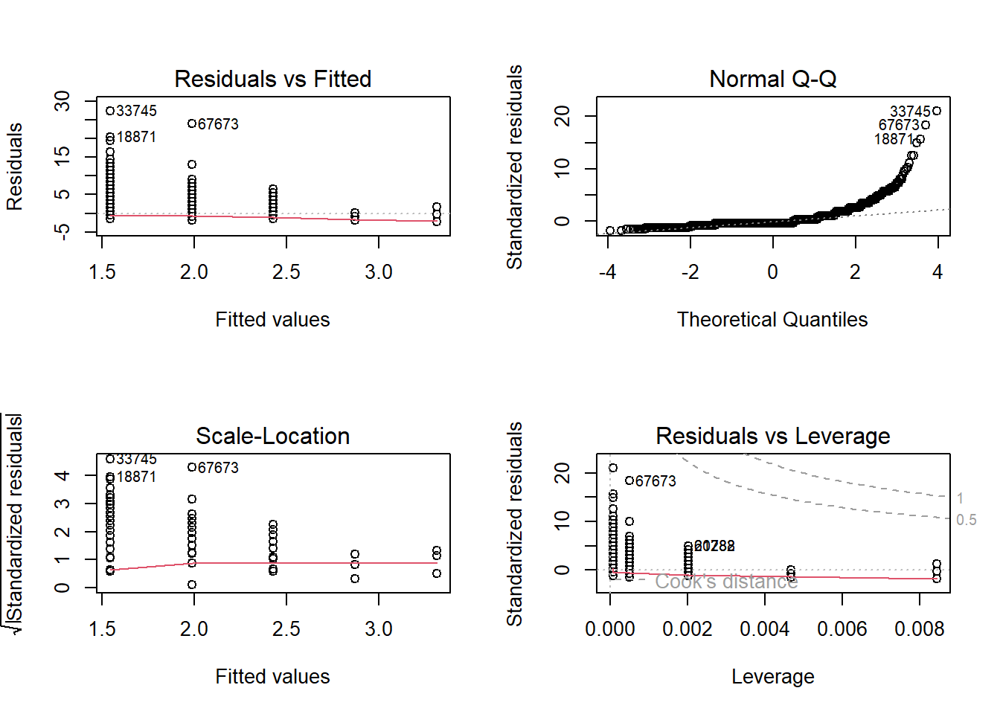
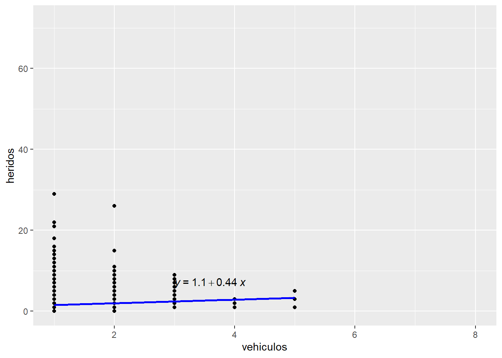

Car crash and number of deathly victims: a peruvian case
General considerations:
Do the number of vehicles involved in a car crash have an impact in the number of deathly victims? We tested the national census of peruvian police precincts (INEI, 2017) to find out. However this analysis is, in essence, an exercise in application of the regression approach applied to publicly accessible databases.
We’ve divided the analysis in 6 steps, using the guide proposed by Rebecca Bevans in Linear Regression in R - A Step-by-Step Guide & Examples
Step 1: Install and load the packages
library(ggplot2)
library(dplyr)
Attaching package: 'dplyr'The following objects are masked from 'package:stats':
filter, lagThe following objects are masked from 'package:base':
intersect, setdiff, setequal, unionlibrary(broom)
library(ggpubr)
library(tidyverse)── Attaching core tidyverse packages ──────────────────────── tidyverse 2.0.0 ──
✔ forcats 1.0.0 ✔ stringr 1.5.0
✔ lubridate 1.9.2 ✔ tibble 3.1.8
✔ purrr 1.0.1 ✔ tidyr 1.3.0
✔ readr 2.1.4 ── Conflicts ────────────────────────────────────────── tidyverse_conflicts() ──
✖ dplyr::filter() masks stats::filter()
✖ dplyr::lag() masks stats::lag()
ℹ Use the conflicted package (<http://conflicted.r-lib.org/>) to force all conflicts to become errorslibrary(readr)
library(haven)Step 2: Load the data into R
# Load the database
data_at <- read_sav("data/db_censo_comisarias.sav")
summary(data_at) ID_N UBIGEO CCDI NOMBREDI
Length:68811 Length:68811 Length:68811 Length:68811
Class :character Class :character Class :character Class :character
Mode :character Mode :character Mode :character Mode :character
ANIO ID_AT AT_N AT_NALF
Min. :2016 Min. : 1.00 Min. : NA Length:68811
1st Qu.:2016 1st Qu.: 10.00 1st Qu.: NA Class :character
Median :2016 Median : 25.00 Median : NA Mode :character
Mean :2016 Mean : 29.52 Mean :NaN
3rd Qu.:2017 3rd Qu.: 46.00 3rd Qu.: NA
Max. :2017 Max. :200.00 Max. : NA
NA's :68811
AT_TOT AT101 AT101_O AT101_NRO
Min. : 1.00 Min. :1.000 Length:68811 Length:68811
1st Qu.: 38.00 1st Qu.:3.000 Class :character Class :character
Median : 75.00 Median :5.000 Mode :character Mode :character
Mean : 58.03 Mean :3.996
3rd Qu.: 75.00 3rd Qu.:5.000
Max. :200.00 Max. :6.000
AT101_ALF AT102 AT103_D AT103_M
Length:68811 Length:68811 Length:68811 Length:68811
Class :character Class :character Class :character Class :character
Mode :character Mode :character Mode :character Mode :character
AT103_A AT103_HOR AT103_MIN AT104A
Length:68811 Min. : 0.00 Min. : 0.00 Min. :1.000
Class :character 1st Qu.: 9.00 1st Qu.: 5.00 1st Qu.:2.000
Mode :character Median :14.00 Median :30.00 Median :4.000
Mean :14.96 Mean :24.46 Mean :3.667
3rd Qu.:18.00 3rd Qu.:40.00 3rd Qu.:4.000
Max. :99.00 Max. :99.00 Max. :8.000
AT104A_O AT104B AT104B_O AT104C_V1
Length:68811 Min. :1.000 Length:68811 Length:68811
Class :character 1st Qu.:2.000 Class :character Class :character
Mode :character Median :2.000 Mode :character Mode :character
Mean :2.623
3rd Qu.:2.000
Max. :7.000
AT104C_R1 AT104C_V2 AT104C_R2 AT104D_DPTO
Length:68811 Length:68811 Length:68811 Length:68811
Class :character Class :character Class :character Class :character
Mode :character Mode :character Mode :character Mode :character
AT104D_PROV AT104D_DIST AT105 AT105_O
Length:68811 Length:68811 Min. : 1.00 Length:68811
Class :character Class :character 1st Qu.: 4.00 Class :character
Mode :character Mode :character Median : 5.00 Mode :character
Mean : 5.39
3rd Qu.: 8.00
Max. :12.00
AT106_1 AT106_1_CANT AT106_2 AT106_2_CANT
Min. :0.0000 Min. :1.00 Min. :0.00000 Min. :1.00
1st Qu.:0.0000 1st Qu.:1.00 1st Qu.:0.00000 1st Qu.:1.00
Median :0.0000 Median :1.00 Median :0.00000 Median :1.00
Mean :0.3613 Mean :1.19 Mean :0.05586 Mean :1.04
3rd Qu.:1.0000 3rd Qu.:1.00 3rd Qu.:0.00000 3rd Qu.:1.00
Max. :1.0000 Max. :8.00 Max. :1.00000 Max. :3.00
NA's :43947 NA's :64967
AT106_3 AT106_3_CANT AT106_4 AT106_4_CANT
Min. :0.00000 Min. :1.00 Min. :0.0000 Min. :1.00
1st Qu.:0.00000 1st Qu.:1.00 1st Qu.:0.0000 1st Qu.:1.00
Median :0.00000 Median :1.00 Median :0.0000 Median :1.00
Mean :0.08968 Mean :1.06 Mean :0.1725 Mean :1.09
3rd Qu.:0.00000 3rd Qu.:1.00 3rd Qu.:0.0000 3rd Qu.:1.00
Max. :1.00000 Max. :4.00 Max. :1.0000 Max. :6.00
NA's :62640 NA's :56939
AT106_5 AT106_5_CANT AT106_6 AT106_6_CANT
Min. :0.000000 Min. :1.00 Min. :0.00000 Min. :1.00
1st Qu.:0.000000 1st Qu.:1.00 1st Qu.:0.00000 1st Qu.:1.00
Median :0.000000 Median :1.00 Median :0.00000 Median :1.00
Mean :0.008676 Mean :1.03 Mean :0.05389 Mean :1.05
3rd Qu.:0.000000 3rd Qu.:1.00 3rd Qu.:0.00000 3rd Qu.:1.00
Max. :1.000000 Max. :2.00 Max. :1.00000 Max. :4.00
NA's :68214 NA's :65103
AT106_7 AT106_7_CANT AT106_8 AT106_8_CANT
Min. :0.00000 Min. :1.00 Min. :0.00000 Min. :1.00
1st Qu.:0.00000 1st Qu.:1.00 1st Qu.:0.00000 1st Qu.:1.00
Median :0.00000 Median :1.00 Median :0.00000 Median :1.00
Mean :0.02042 Mean :1.06 Mean :0.08654 Mean :1.05
3rd Qu.:0.00000 3rd Qu.:1.00 3rd Qu.:0.00000 3rd Qu.:1.00
Max. :1.00000 Max. :3.00 Max. :1.00000 Max. :4.00
NA's :67406 NA's :62856
AT106_9 AT106_9_CANT AT106_10 AT106_10_CANT
Min. :0.00000 Min. :1.00 Min. :0.000000 Min. :1.00
1st Qu.:0.00000 1st Qu.:1.00 1st Qu.:0.000000 1st Qu.:1.00
Median :0.00000 Median :1.00 Median :0.000000 Median :1.00
Mean :0.04305 Mean :1.11 Mean :0.008967 Mean :1.03
3rd Qu.:0.00000 3rd Qu.:1.00 3rd Qu.:0.000000 3rd Qu.:1.00
Max. :1.00000 Max. :4.00 Max. :1.000000 Max. :3.00
NA's :65849 NA's :68194
AT106_11 AT106_11_CANT AT106_12 AT106_12_O
Min. :0.00000 Min. :1.00 Min. :0.00000 Length:68811
1st Qu.:0.00000 1st Qu.:1.00 1st Qu.:0.00000 Class :character
Median :0.00000 Median :1.00 Median :0.00000 Mode :character
Mean :0.07667 Mean :1.12 Mean :0.00372
3rd Qu.:0.00000 3rd Qu.:1.00 3rd Qu.:0.00000
Max. :1.00000 Max. :5.00 Max. :1.00000
NA's :63535
AT106_12_CANT AT106_13 AT106_13_CANT AT106_14
Min. :1.00 Min. :0.0000 Min. :1.00 Min. :0.0000
1st Qu.:1.00 1st Qu.:0.0000 1st Qu.:1.00 1st Qu.:0.0000
Median :1.00 Median :0.0000 Median :1.00 Median :0.0000
Mean :1.01 Mean :0.2003 Mean :1.06 Mean :0.1692
3rd Qu.:1.00 3rd Qu.:0.0000 3rd Qu.:1.00 3rd Qu.:0.0000
Max. :2.00 Max. :1.0000 Max. :3.00 Max. :1.0000
NA's :68555 NA's :55028
AT106_14_CANT AT106_15 AT106_15_CANT AT106_16
Min. : 0.00 Min. :0.000000 Min. :1.00 Min. :0.000000
1st Qu.: 1.00 1st Qu.:0.000000 1st Qu.:1.00 1st Qu.:0.000000
Median : 1.00 Median :0.000000 Median :1.00 Median :0.000000
Mean : 1.12 Mean :0.003081 Mean :1.02 Mean :0.008022
3rd Qu.: 1.00 3rd Qu.:0.000000 3rd Qu.:1.00 3rd Qu.:0.000000
Max. :10.00 Max. :1.000000 Max. :2.00 Max. :1.000000
NA's :57167 NA's :68599
AT106_16_CANT AT106_17 AT106_17_CANT AT106_18
Min. :1.00 Min. :0.000000 Min. :1 Min. :0
1st Qu.:1.00 1st Qu.:0.000000 1st Qu.:1 1st Qu.:0
Median :1.00 Median :0.000000 Median :1 Median :0
Mean :1.02 Mean :0.001061 Mean :1 Mean :0
3rd Qu.:1.00 3rd Qu.:0.000000 3rd Qu.:1 3rd Qu.:0
Max. :2.00 Max. :1.000000 Max. :1 Max. :0
NA's :68259 NA's :68738
AT106_18_O AT106_18_CANT AT107_1 AT107_2
Length:68811 Min. : NA Min. :0.0000 Min. :0.0000
Class :character 1st Qu.: NA 1st Qu.:0.0000 1st Qu.:0.0000
Mode :character Median : NA Median :0.0000 Median :1.0000
Mean :NaN Mean :0.2991 Mean :0.5817
3rd Qu.: NA 3rd Qu.:1.0000 3rd Qu.:1.0000
Max. : NA Max. :1.0000 Max. :1.0000
NA's :68811
AT107_3 AT108 AT108_1 AT108_2
Min. :0.0000 Min. :1.000 Min. : 1.00 Min. : 0.000
1st Qu.:0.0000 1st Qu.:2.000 1st Qu.: 1.00 1st Qu.: 1.000
Median :0.0000 Median :2.000 Median : 1.00 Median : 1.000
Mean :0.2245 Mean :2.332 Mean : 1.28 Mean : 1.609
3rd Qu.:0.0000 3rd Qu.:3.000 3rd Qu.: 1.00 3rd Qu.: 2.000
Max. :1.0000 Max. :3.000 Max. :24.00 Max. :72.000
NA's :66355 NA's :25305
AT108_3 AT109_1 AT109_2 AT109_3
Min. : 0.000 Min. :0.0000 Min. :0.00000 Min. :0.000000
1st Qu.: 1.000 1st Qu.:0.0000 1st Qu.:0.00000 1st Qu.:0.000000
Median : 1.000 Median :0.0000 Median :0.00000 Median :0.000000
Mean : 1.278 Mean :0.2434 Mean :0.01888 Mean :0.006336
3rd Qu.: 2.000 3rd Qu.:0.0000 3rd Qu.:0.00000 3rd Qu.:0.000000
Max. :66.000 Max. :1.0000 Max. :1.00000 Max. :1.000000
AT109_4 AT109_5 AT109_6 AT109_7
Min. :0.000000 Min. :0.00000 Min. :0.0000 Min. :0.00000
1st Qu.:0.000000 1st Qu.:0.00000 1st Qu.:0.0000 1st Qu.:0.00000
Median :0.000000 Median :0.00000 Median :0.0000 Median :0.00000
Mean :0.006903 Mean :0.08513 Mean :0.2281 Mean :0.03225
3rd Qu.:0.000000 3rd Qu.:0.00000 3rd Qu.:0.0000 3rd Qu.:0.00000
Max. :1.000000 Max. :1.00000 Max. :1.0000 Max. :1.00000
AT109_8 AT109_9 AT109_10 AT109_11
Min. :0.00000 Min. :0.00000 Min. :0.000000 Min. :0.00000
1st Qu.:0.00000 1st Qu.:0.00000 1st Qu.:0.000000 1st Qu.:0.00000
Median :0.00000 Median :0.00000 Median :0.000000 Median :0.00000
Mean :0.03119 Mean :0.05479 Mean :0.007106 Mean :0.02375
3rd Qu.:0.00000 3rd Qu.:0.00000 3rd Qu.:0.000000 3rd Qu.:0.00000
Max. :1.00000 Max. :1.00000 Max. :1.000000 Max. :1.00000
AT109_12 AT109_13 AT109_14 AT109_15
Min. :0.000000 Min. :0.000000 Min. :0.000000 Min. :0.0000
1st Qu.:0.000000 1st Qu.:0.000000 1st Qu.:0.000000 1st Qu.:0.0000
Median :0.000000 Median :0.000000 Median :0.000000 Median :0.0000
Mean :0.006336 Mean :0.008371 Mean :0.001119 Mean :0.1537
3rd Qu.:0.000000 3rd Qu.:0.000000 3rd Qu.:0.000000 3rd Qu.:0.0000
Max. :1.000000 Max. :1.000000 Max. :1.000000 Max. :1.0000
AT109_16 AT109_17 AT109_18 AT109_19
Min. :0.00000 Min. :0.000000 Min. :0.0000 Min. :0.00000
1st Qu.:0.00000 1st Qu.:0.000000 1st Qu.:0.0000 1st Qu.:0.00000
Median :0.00000 Median :0.000000 Median :0.0000 Median :0.00000
Mean :0.00981 Mean :0.001177 Mean :0.2867 Mean :0.02758
3rd Qu.:0.00000 3rd Qu.:0.000000 3rd Qu.:1.0000 3rd Qu.:0.00000
Max. :1.00000 Max. :1.000000 Max. :1.0000 Max. :1.00000
AT109_19_O Factor_2016 Factor_2017
Length:68811 Min. : 1.000 Min. : 1.00
Class :character 1st Qu.: 1.000 1st Qu.: 1.00
Mode :character Median : 1.293 Median : 1.00
Mean : 2.912 Mean : 2.00
3rd Qu.: 3.080 3rd Qu.: 1.95
Max. :19.760 Max. :12.05
NA's :28751 NA's :40060 Step 3: Explore outcome variable (must be numeric)
We checked if the independent variable automoviles involucrados (VI - AT_106_1) is numeric. A general look at the database shows that this number represents only the value for cars of sedan or hatchback models, while other automobiles such as trucks, station wagons, buses or vans are excluded from this count.
It can be said that the variable could be considered as a categoric variable. While it has a numeric linear value, the max output is limited to 5. Added to this the output for any value of vehicles belongs to \(N\) , as you can’t have half a vehicle involved in a car accident, which furthers the argument for a categorical analysis. Linear Regression is possible with one independent categoric variable, but has special considerations in the interpretation of its data.
For practice purposes we’ll consider it as a numeric variable, as the analysis with categoric variables omits many of the interpretations in a numeric variable.
heridos <- data_at$AT108_2
vehiculos <- data_at$AT106_1_CANT
glimpse(heridos) #Numeric num [1:68811] NA 2 NA 1 1 1 0 NA 1 1 ...
- attr(*, "label")= chr "NÚMERO DE HERIDOS"
- attr(*, "format.spss")= chr "F11.0"
- attr(*, "display_width")= int 11glimpse(vehiculos) #Numeric num [1:68811] 1 1 NA NA NA 1 1 NA NA NA ...
- attr(*, "label")= chr "VEHÍCULO MAYOR AUTOMÓVIL - CANTIDAD"
- attr(*, "format.spss")= chr "F11.0"
- attr(*, "display_width")= int 11Step 4: Make sure data assumptions
A. Linearity
When checking for linearity we can see that the points are not scattered in a linear distribution, they form columns for each whole value. They miss the mark in forming some sort of bell curve and most of the cases had only 1 automobile involved.
plot(heridos ~ vehiculos, data = data_at)
B. Independence of observations
Theoretically, we expect each variable to be independent
C. Normality
When checking for normality, the histogram is not bell shaped, which states a tendency of values in the lower numbers of the independent variable. Most of the cases had 1 or 2 automovile vehicles involved.
hist(vehiculos)
# Se puede evaluar la normalidad por QQplot, KurtosisStep 5: Perform the linear regression analysis
In the analysis we see that the p value is favorable to us, as it is low enough to make this a good model. It appears to be a significant positive relationship between vehicles and people hurt in car accidents, with a 0,44 increase in people hurt for every unit of vehicles involved.
However, if we treat the variables as categorical ones, we can omit the linearity analysis and insist on this relation without trouble.
data_at_lm <- lm(heridos ~ vehiculos, data = data_at)
summary(data_at_lm)
Call:
lm(formula = heridos ~ vehiculos, data = data_at)
Residuals:
Min 1Q Median 3Q Max
-2.3146 -0.5449 -0.5449 0.4551 27.4551
Coefficients:
Estimate Std. Error t value Pr(>|t|)
(Intercept) 1.10247 0.03667 30.06 <2e-16 ***
vehiculos 0.44243 0.03089 14.32 <2e-16 ***
---
Signif. codes: 0 '***' 0.001 '**' 0.01 '*' 0.05 '.' 0.1 ' ' 1
Residual standard error: 1.307 on 13116 degrees of freedom
(55693 observations deleted due to missingness)
Multiple R-squared: 0.0154, Adjusted R-squared: 0.01533
F-statistic: 205.2 on 1 and 13116 DF, p-value: < 2.2e-16Step 6: Check the homocedasticity
Residuals show bias, as they are distributed between the two first values. If we consider the “vehicles” variable as categorical then we can also omit this test
par(mfrow=c(2,2))
plot(data_at_lm)
par(mfrow=c(1,1))Step 7: Perform a graph to visualize the results
With the previous steps done we can graph the linear model an see that the number of vehicles involved has (eventhough small) a relation to the number of peopler hurt in the accident
graph <- ggplot(data_at, aes(x=vehiculos, y=heridos)) + geom_point()
graph <- graph + geom_smooth(method='lm', col='blue')
graph <- graph + stat_regline_equation(label.x = 3, label.y = 7)
graph`geom_smooth()` using formula = 'y ~ x'Warning: Removed 55693 rows containing non-finite values (`stat_smooth()`).Warning: Removed 55693 rows containing non-finite values
(`stat_regline_equation()`).Warning: Removed 55693 rows containing missing values (`geom_point()`).
relation <- lm(vehiculos~heridos)
# give the chart a name
png(file = "linearregression.png")
# Plot
plot(vehiculos,heridos, col = "blue", main = "Regresión de vehículos y heridos en choques de autos",
abline(lm(vehiculos~heridos)), cex = 1.3, pch = 16, xlab = "vehiculos", ylab = "heridos")Step 8: Report and interpret your results
We can interpret of this analysis that the number automovile vehicles invovled in car accidents have a relation with the number of wounded people. In our next analysis we will sum the number of different types of vehicles involved, so we can get a complete picture of the relation between vehicles involved and total number of wounde people.
We will also try to create an html site where you can select the type of vehicle you wish to add in the analysis